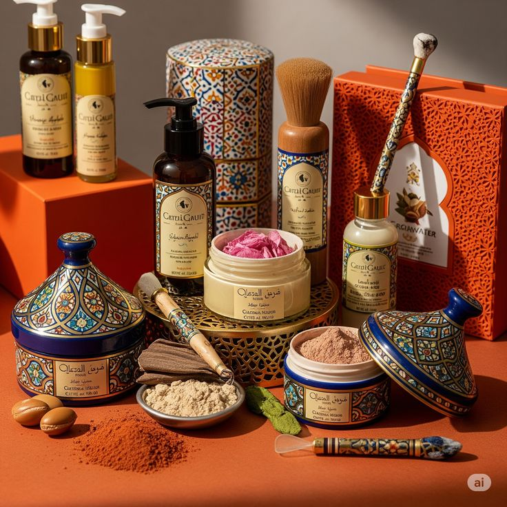
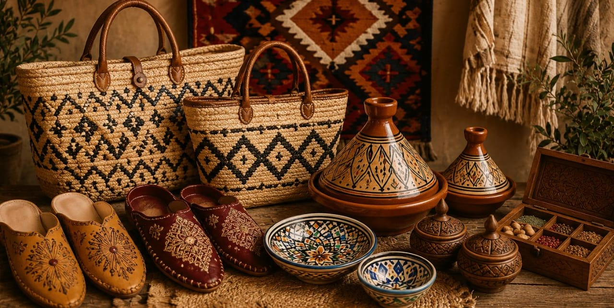

Produits Bio
Épices, huiles et produits alimentaires biologiques issus de l'agriculture locale.
Explorer →
Mode Traditionnelle
Djellabas, kaftans et babouches brodés à la main par des artisans marocains.
Explorer →Maison & Déco
Lanternes, plateaux et objets de décoration inspirés de l'artisanat marocain.
Explorer →